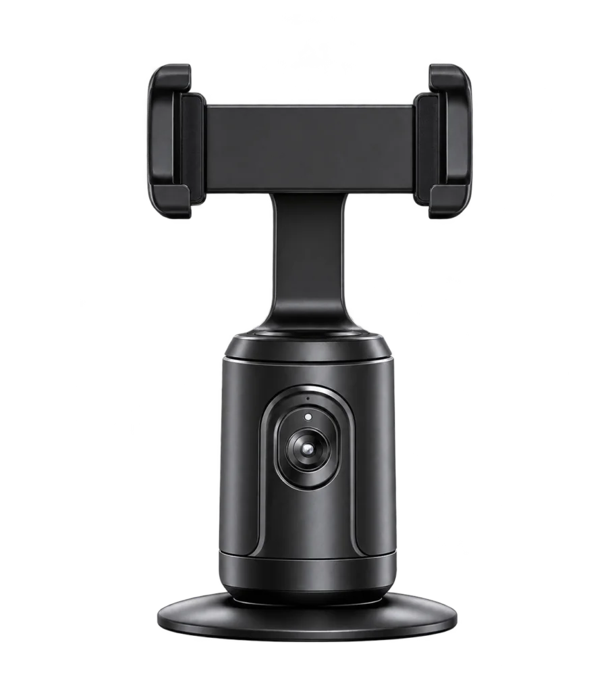
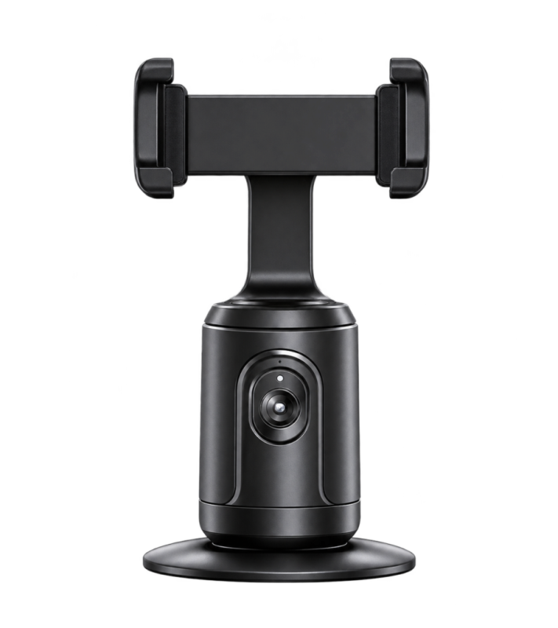

Luôn giữ bạn ở trung tâm
Trục xoay ngang 360° tự động điều chỉnh góc nhìn khi bạn bước qua lại trước bàn làm việc, gian bếp hay kệ trưng bày sản phẩm.
GAERU P01 · GIMBAL AI TỰ ĐỘNG THEO DÕI
Giá đỡ điện thoại tích hợp cảm biến AI tự động xoay 360° theo người nói. Tự tin di chuyển khi quay video, nấu ăn hay livestream một mình mà không cần cài đặt ứng dụng.

TỰ DO TRONG KHUNG HÌNH
Cảm biến quang học tích hợp trực tiếp trên thân đế giúp P01 nhận diện và xoay theo chuyển động của bạn độc lập, tương thích với camera mặc định và các ứng dụng livestream phổ biến.
Trục xoay ngang 360° tự động điều chỉnh góc nhìn khi bạn bước qua lại trước bàn làm việc, gian bếp hay kệ trưng bày sản phẩm.
Không yêu cầu kết nối Bluetooth hay cài app riêng để kích hoạt cảm biến. Bạn tự do quay bằng Camera gốc, TikTok, Facebook, CapCut hoặc Zoom.
Ngàm kẹp hỗ trợ chuyển đổi nhanh giữa khung dọc 9:16 và khung ngang 16:9. Đế tròn tháo rời để gắn lên chân tripod chuẩn ren 1/4 khi cần.
Chọn bản tiêu chuẩn khi đặt trên bàn học, bàn làm việc; hoặc chọn bộ kèm chân đỡ 2m1 khi cần đặt dưới sàn quay đứng toàn thân.

CHỌN PHIÊN BẢN PHÙ HỢP
Đối chiếu không gian ghi hình thường xuyên của bạn để chọn đúng cấu hình ngay từ đầu.
Cả hai phiên bản đều sử dụng chung thân máy P01 xoay 360° và ngàm kẹp điện thoại đa hướng.
GAERU TRONG CUỘC SỐNG CỦA BẠN
Di chuyển giữa các khu vực chuẩn bị nguyên liệu hoặc thao tác bằng hai tay mà khung hình vẫn bám theo tự nhiên.
Tự tin đứng lên, lấy mẫu hàng trên kệ và quay lại bàn tư vấn mà không bị khuất khỏi màn hình người xem.
Giữ người trình bày luôn trong tầm mắt khi viết bảng, hướng dẫn động tác hoặc thuyết trình trực tuyến.
CHI TIẾT THIẾT BỊ
| Cơ chế theo dõi | Cảm biến AI tích hợp trên thân máy · Xoay ngang 360° |
|---|---|
| Yêu cầu ứng dụng | Không cần cài app · Hoạt động độc lập với ứng dụng quay trên điện thoại |
| Hướng gắn điện thoại | Xoay ngang (16:9) hoặc dọc (9:16) · Ngàm kẹp cân tâm |
| Chuẩn ngàm đáy | Đế để bàn tháo rời · Tích hợp lỗ ren 1/4 gắn chân đỡ |
| Các phiên bản đang bán | Gimbal P01 để bàn (550.000 ₫) · Gimbal GAERU P01 + Chân 2m1 (650.000 ₫) |
| Lưu ý môi trường | Sử dụng trên mặt phẳng vững, đủ ánh sáng và không có vật cản che trước cảm biến |
GIẢI ĐÁP NHANH
Vì cảm biến AI hoạt động độc lập trên thân đế, P01 tương thích với hầu hết các dòng điện thoại iPhone và Android nằm trong kích thước ngàm kẹp. Khi lắp, hãy căn giữa trọng tâm và tránh để ngàm đè lên nút nguồn hoặc cụm phím âm lượng.
Đảm bảo khu vực quay có ánh sáng rõ ràng, không ngược sáng mạnh và không có đồ vật che khuất mắt cảm biến ở mặt trước thân P01. Nên bắt đầu với một người trong khung hình và di chuyển ở tốc độ tự nhiên.
Hoàn toàn được. P01 đóng vai trò giữ và xoay điện thoại mà không chiếm cổng sạc của máy, nên bạn có thể cắm đầu thu micro K9, M3 hoặc G1 ULTRA vào điện thoại để vừa tự động xoay khung hình vừa thu âm rõ nét.
Hãy mở rộng tối đa ba chân đế dưới sàn phẳng, khóa chặt các khớp nối và vặn chắc ren 1/4 vào đáy P01 trước khi kẹp điện thoại lên ngàm.
CÂU CHUYỆN TIẾP THEO BẮT ĐẦU TỪ BẠN